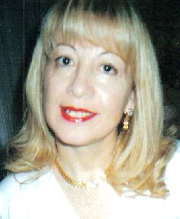

| "Quien construyó
una espera apostó en un punto del tiempo (que quedó atrás)
a la consumición de un hecho" SERGIO FERREIRA |
 SUCESION
DE AYERES
SUCESION
DE AYERES
| "Quien construyó
una espera apostó en un punto del tiempo (que quedó atrás)
a la consumición de un hecho" SERGIO FERREIRA |
 SUCESION
DE AYERES
SUCESION
DE AYERES
EL DIA REPITE DE AÑO,
AHORA Y EN LA HORA DEL TRAYECTO COTIDIANO QUE ESPERA.
ASIGNATURAS PENDIENTES SON LAS HORAS NO ANUNCIADAS
EN EL GRAN SOPLO DEL TIEMPO.
ÉL REGRESA PARA CORTAR LOS AROMAS MENSUALES DEL OTOÑO,
DISPUESTO A DIBUJAR TRÉBOLES DE CUATRO HOJAS.
SUS EXACTOS MINUTOS TIENEN EL MISTERIOSO SABOR A DIOS,
MIENTRAS LA VIDA, SUPLICA POR UN " AVE MARIA" JUSTO
SALVANDO PENAS DE MÚLTIPLES ESENCIAS.
ANTE VARIABLES TEMBLORES CÓSMICOS
REGALA SU TRAJE BLANCO AL CONSENTIDO CIELO DESIERTO,
QUE CON SOBRADA POSESION APRIETA EL ROSTRO DE LA TIERRA.
MÁGICO DIA!
ERES LA ESPERANZA DE PAZ ANTE TANTA AUSENCIA,
EL SENTIDO SABOR DEL "HOY" ANTE LA SALITRE PARCA QUE AVANZA,
EL NECESARIO ROCÍO PARA BLANCAS MAGNOLIAS EN BROTE
JUNTO A AMORES EXTRAVIADOS POR POROS EN FUGA.
ERES EL ECO CIEGO DEL PLANETA EN SUEÑOS,
ABRAZADO AL SOL CUANDO CAMINA,
Y
ERES EL NÉCTAR DE LUZ ANTE ESPACIOS VACIOS
DE CARICIAS IMPERFECTAS SOBRE CALLADAS SOMBRAS.
EL DÍA REPITE AÑOS,
POR AYERES OLVIDADOS SOBRE LA PARED OCULTA DEL TIEMPO,
INTENTANDO RESISTIR AL SOPLO DEL INSTANTE,
QUE AHORA Y EN LA HORA NUNCA CESA.
© MARY ACOSTA MARZO / 2009
 |
Breve reseña biográfica de la autora Escritora
argentina/española, Promotora literaria y Coordinadora de eventos
literarios /artísticos y terapéuticos.
Desarrolla una intensa actividad literaria (congresos, cafés literarios, presentaciones de libros en su país y en el extranjero). Fue jurado en distintos eventos culturales Ha sido nominada por The American Biographical Institute como “Mujer del año 2002, 2004 , 2005 y 2008” California, USA, y Miembro del Departamento de Nominadores de Mujeres Profesionales de ABI (USA 2003). Nominada a Candidata para el “Diploma Masters”, de la Academia Mundial de las Letras (USA año 2007). Premio Internacional aBrace 2005,- Montevideo, Uruguay (2006) Primer premio Internacional antológico latinoamericano “Como ángeles en llamas” – Lima Perú (2004) y “Los ángeles también cantan”, CD (2006) Seleccionada para 1ª premio en poesía en Certamen antológico: POETAS Y NARRADORES DE IBEROAMERICA por su poema “Sollozo americano” (JURADO INTEGRADO POR, MARIA GRANATA, MARIA LUISA DE LUJAN CAMPOS Y JOSEFINA LEYVA DE USA, Año 2007) 1ª Premio género poesía “JORGE L. BORGES” otorgado por GEORGES ZANUN EDITORES, mérito que dio lugar a la edición de su libro: LA REPUBLICA DE LOS TRISTES (Año 2007) Nominada por el teatro ARLEQUINES para LOS PREMIOS ARLEQUINES 2007 en el rubro: MEJOR EVENTO CULTURAL por presentación de su libro, La rca. de los tristes (Georges Zanun Editores) SELECCIONADA EN MEXICO POR ARGENTINA
PARA LIBRO HOMENAJE A SIMONE DE BEAUVOIR Y MUJERES QUEBRADAS EN EL MUNDO
LLAMADO "LA MUJER ROTA" Participación en V Encuentro Internacional de HAIKU, organizado por el Instituto TOZAI, (San Isidro- Pcia Bs. As. Octubre de 2008) Participación en el Encuentro Latinoamericano de artistas por la NO VIOLENCIA, (Bs. As. 4 y 5 de Noviembre de 2008).Algunas de sus obras fueron traducidas a los idiomas inglés, francés, alemán, catalán y portugués. Participa en más de 40 antologías (Nacionales e Internacionales). Representante en Bs. As. del Movimiento
Cultural Internacional aBrace (Uruguay – Brasil). Corresponsal literaria de Revista “Acuarela Literaria” (Pontevedra - España).Integrante del Círculo Internacional de Literatura Vanguardista – LALUPE.COM (Miami, USA). Poemarios publicados: “Mensajes del corazón” (1996), “Bajo el ala de un ángel” también presentado en España, Francia (2002) y “29° Feria Internacional del Libro” año 2003). “En brazos de dos lunas”(2004) presentado en 30° Feria Internacional del Libro”, y en el exterior durante el mismo año Lima, Perú y “V Encuentro Internacional Literario aBrace (Uruguay) Poemario y CD “Ceguera en el espejo”– junio de 2004), “XXIV Simposio Internacional de Literatura” auspiciado por (Instituto Literario Cultural Hispánico – agosto de 2004 - “31° Feria Internacional del libro”abril de 2005) y 7° Encuentro Internacional Literario aBrace (Montevideo, Uruguay, año 2006) La república de los tristes
(2007) presentado en la Legislatura porteña de Bs. As.- Simposio
Internacional del Instituto Cultural Hispánico, Luján, Teatro
Arlequines y en el año 2008, Encuentro Nacional “Voces 2008”
auspiciado por el grupo literario Pretextos . Para comunicarse con la autora: Emails: poemasdemary@hotmail.com |